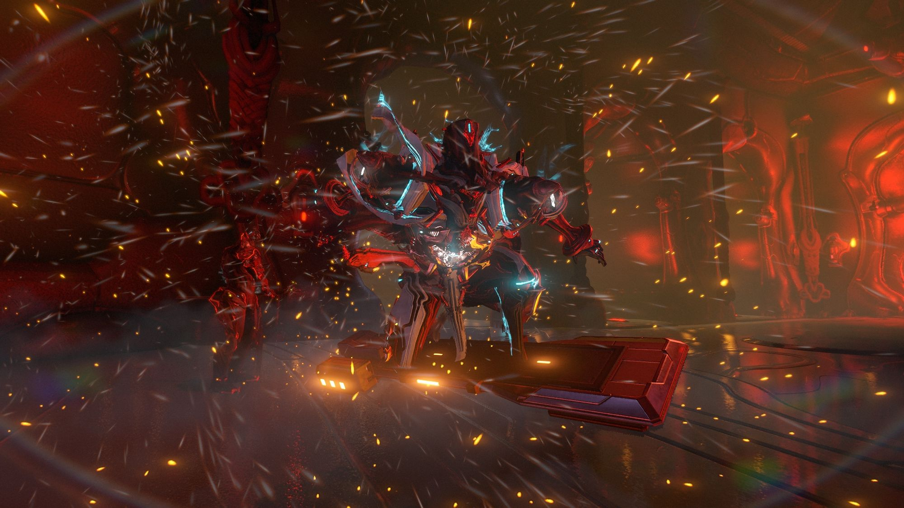

ShadowKylin
/
新手资源总览
Search
Try Notion

Drag image to reposition
新手资源总览
萌新常用工具网站
官网站点
游戏官网
官方论坛
维基攻略
灰机WIKI
（最推荐）
英文版WIKI（信息更全）
物品交易
Warframe Market(WM)
Riven Market (RM)
WFA Market
工具网站
Riven.IM 物品配装、紫卡分析
WFA信息聚合
Overframe.gg配装分享
萌新引导视频合集
萌新入门
[总集]WARFRAME新手教学
【萌新开图全方位详解】| 最棒的开图教学！| Warframe开图全集篇
Warframe|萌新超详细基础攻略解说：怎么注册+激活账号，新手如何快速入门教程
萌新福音 大幅提升游戏体验的那些操作
Warframe星际战甲-引导新手必做的“五要素”,少走弯路是正道
Warframe|超详细新手入门指南教程,开始你的星际旅程！
【Warframe萌新指南2.0】最强指南！全方位讲解萌新期难点！
基础讲解
如何准确找到自己需要的mod的掉落位置！资料库和wiki和百度深度讲解warframe星际战甲国际服畅玩第5期
Warframe-给新手的指挥官全专精系统简介-超详细的攻略解说！
【warframe】升段教学|段位测试 合集[更新至30段]
WF全战甲获取方式一览and前期战甲推荐！
[茶树咕]教你花式过8升9段位测试
地毯式教学
进阶知识
奸商的名义？30分带你了解国际服交易现状…别卖核桃
多P/易懂 一个关于国际服如何交易的讲解视频 （上）大佬只是告诉你通过交易可以变强，但是却告诉你如何进行交易….交易频道火星集市氏族交易机warframe
多P/易懂 一个关于国际服如何交易的讲解视频 （下 ） 第三方网站对于交易的影响和学会观察物品价格走向 warframemarket tennomarket
中断任务讲解，集防御、歼灭、拦截于一身的关卡 warframe星际战甲国际服
带你轻松了解仲裁警报~均衡仲裁者仲裁警报基础入门篇 warframe星际战甲国际服
多P/易懂 warframe鱼类图鉴地球篇 最新版本从零开始的捕鱼攻略 时间地点和鱼饵一个不漏
多P/易懂 鱼类图鉴金星福尔图娜篇 最新版本捕鱼钓鱼攻略 时间地点和鱼饵一个不漏 warframe星际战甲国际服
【夜灵平野全面指南①】赏金任务与希图斯讲解！地球平原入门教学！
【夜灵平野全面指南②】挖矿教学！机制讲解、矿洞推荐与实际演示！
建议关注的UP
jxtichi012
原warframe中文组成员，搬运翻译warframe新闻和更新日志
呆呆Kiri
奸商指南和武器破关节分享
穹即是空
wf教程和讲解视频
MusingTian
开发者访谈和开发者工坊视频搬运
Chicoriental
配色分享
千央黑猫
三弦琴分享和装饰分享
小呆爱吃肉
wf综合视频
另见：
氏族资源分享（配卡、配色、攻略）